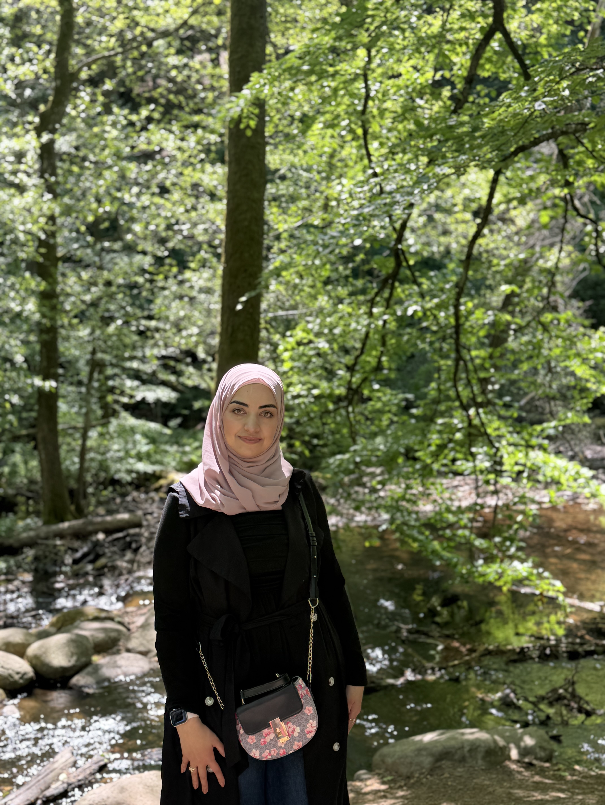
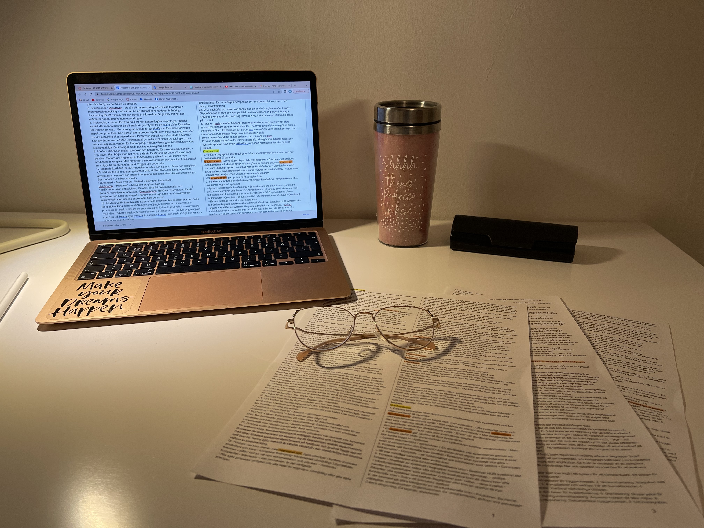
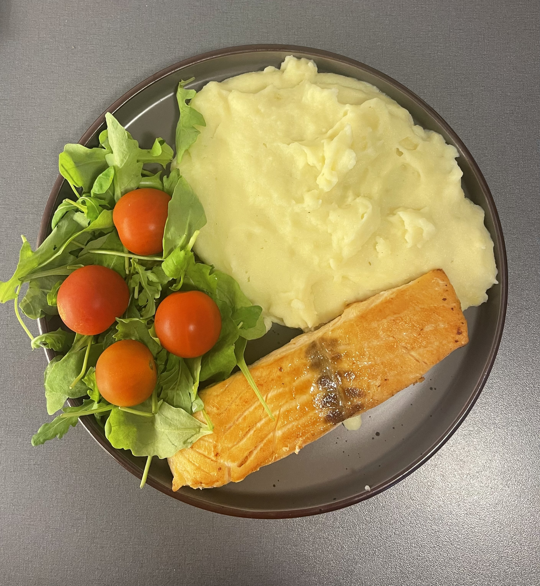
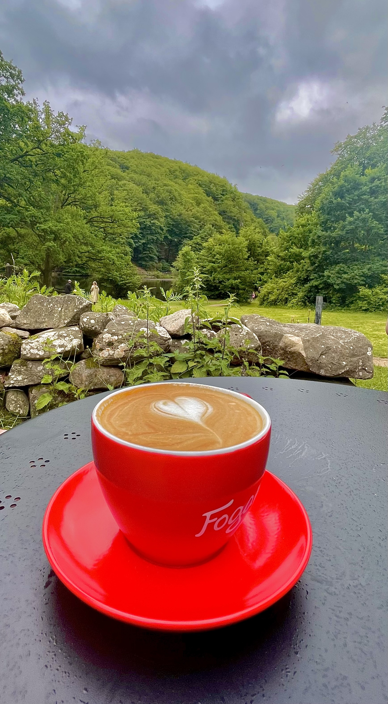

Hello, I'm
Welcome to my portfolio, Here you can learn more about me, My background and my work.

My childhood atlas begins in Syria, where I was born and spent the first years of my life. When I was four years old, my family moved to Saudi Arabia. Because of this, both Syria and Saudi Arabia became important places in my childhood.
One of my favorite memories is our summer road trips between Damascus and Riyadh. The journey took around 24 hours. My father drove, my mother sat beside him, and my five siblings and I shared the back seats. The long road was filled with laughter, games, jokes and music.
Even the simplest moments felt special during these trips. We ate simple sandwiches, talked and spent many hours together. Looking back, the road between Damascus and Riyadh is more than a route on a map to me. It represents family, childhood and many happy memories that I still carry with me today.
I chose to study IT because I have always been interested in technology and following its development. I wanted to study something that I really enjoy and turn that interest into my future career.
After becoming a mother, I discovered another interest: cooking. I enjoy trying different recipes and being creative in the kitchen. One of the things that motivates me is preparing delicious meals for my daughter.
My future goal is to become a skilled web developer and create websites that are useful, accessible and visually appealing. I want to continue learning and improving my skills in web development.
At the same time, one of my most important personal goals is to be a great mother. I hope to build a career that I enjoy while also being present for my daughter.
| Skill | Experience |
|---|---|
| HTML | Creating web page structures |
| Java | Programming and university projects |
| CSS | Styling responsive web pages |



If you would like to contact me, you can send me a message using the form below.